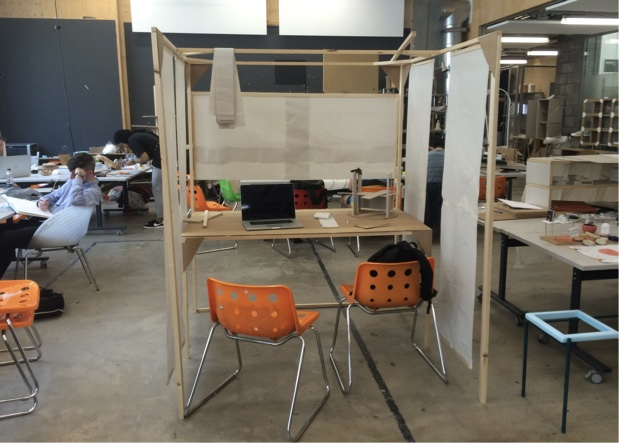
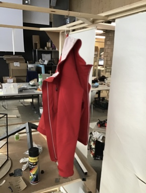
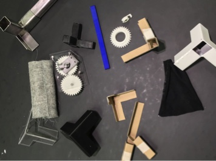
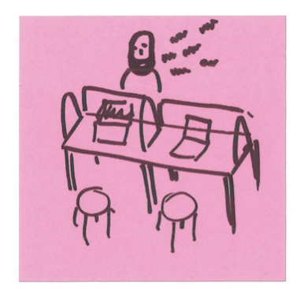
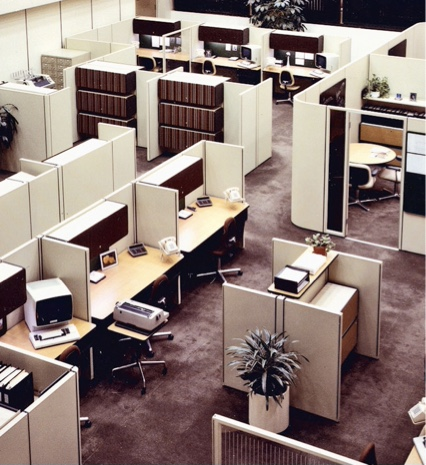
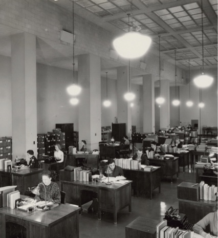
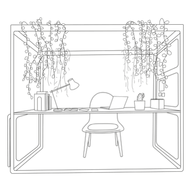

The problem
Open-plan offices that have become prevalent over the past few decades, have been identified as home to noise, odours, unwanted sights and conversations, according to the untertaken interviews and confirmed by studies done in the different parts of the globe in different time.
The solution
MINI Office tries to solve the discovered issue by offering workers a flexible workspace where they can choose the extent to which the room will be open to public.
The four sliding panels on the sides and another one on the front lets the user to form his personal cabinet. Yet, the panels only cover 2/3 of the space, creating a lightweight barrier that shields people from the environment, rather than isolating them in a closed box.
Development
Over the 5 weeks of testing the 1:1 model, the most common request was to increase the overall height by 5-10 cm.
Desk dimensions and the utilised volume is comparable to the regular one, which means that space and footprint occupied by people stays the same.
A collaborative tool
MINI Office was created with a core though in mind that the complete isolation is not too good for people. This is why the panels only cover 2/3 of the wall and this is why a bunch of MINI Offices can be easily moved around the room to form tiny conference spaces, small collaborative environments or neighbourhoods.
Historic reference
Just over a century ago, the first stage of urbanisation was driving people to move to cities from countryside, which has lead them to change relatively spacious countryside houses and fields to barracks and factories full of other people.
By the middle of the century, people - tired from seeing others and being seen by them - have elaborated the need to have some quiet and private space in their office.

MINI Office is a response to the emerging reality of shared work and leisure spaces, in which worker’s productivity is easily undermined by the lack of private space and confidentiality.


